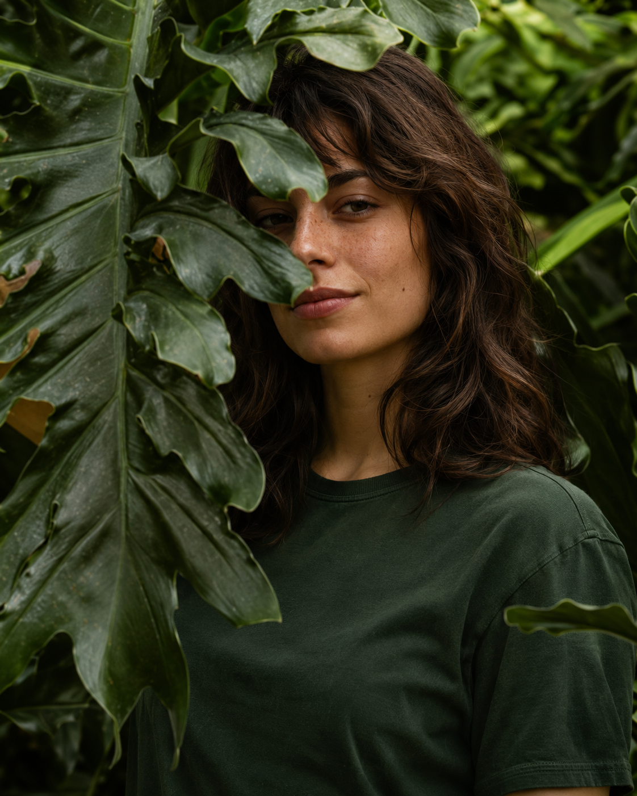

01 / 08
Sol de Domingo
Girassóis e flores vibrantes para iluminar o dia de quem recebe.
Quero este arranjoEncontre o arranjo que traduz o que você quer dizer.
Girassóis e flores vibrantes para iluminar o dia de quem recebe.
Quero este arranjo
Tulipas suaves para surpreender com carinho, em qualquer ocasião.
Quero este arranjo
Lírios lilases e folhagens numa composição serena e delicada.
Quero este arranjo
Rosas vermelhas em tons de vinho para uma declaração marcante.
Quero este arranjo
Lírios e rosas vermelhos em um encontro intenso e cheio de personalidade.
Quero este arranjo



A Floria é a floricultura de Beatriz, em São Paulo. Um lugar para encontrar flores que combinam com quem você quer surpreender.
Um aniversário, um agradecimento ou só vontade de estar perto. Às vezes, um buquê diz exatamente o que a gente sente.
Encontre seu arranjoEscolha o seu gesto e descubra um buquê para ele.
Tem uma cor em mente ou uma data especial? Conte sua ideia e converse sobre o arranjo.